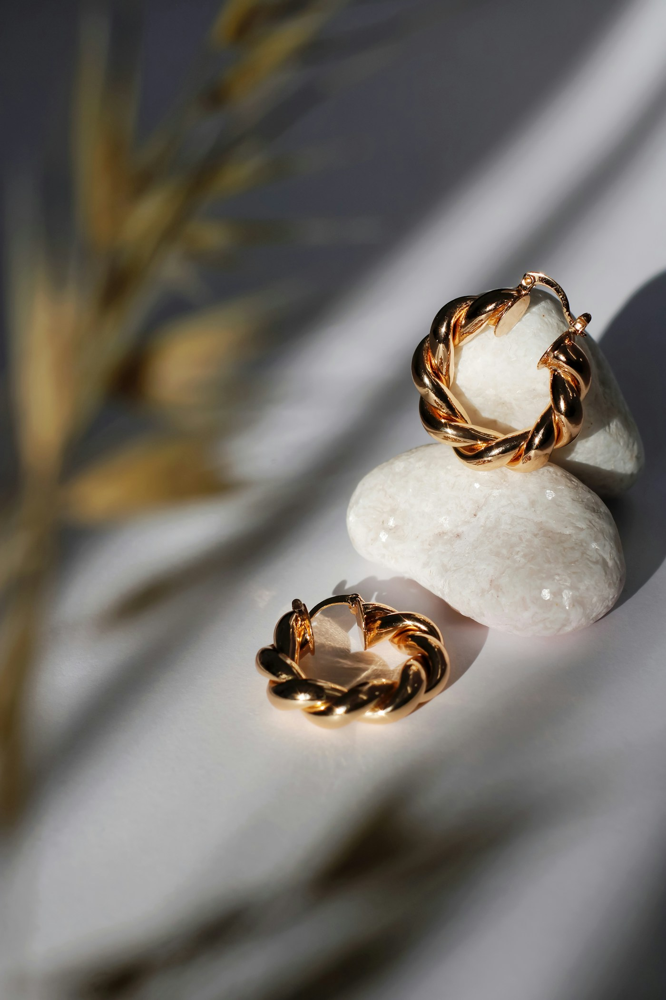

Что скрывается за клеймом
Уточняем пробу и массу металла. Отдельно рассматриваем вставки, чтобы понять состав изделия.
Санкт-Петербург · Спасский переулок, 14/35
Оцениваем и выкупаем золото, бриллианты, монеты и часы. Объясняем, из чего складывается предложение.
В центре Петербурга, рядом с метро «Спасская»

Оценка по фотоНачните обращение из дома
Камни отдельноУчитываем вставки в украшениях
Расчёт после сделкиНаличными или на карту
Что приносите на оценку
Выберите категорию,
чтобы подготовить обращение.
Изделия из золота
Выберите предмет,
чтобы перейти к описанию.
Выкуп золота
| Проба и вид изделия | ₽ за грамм |
|---|---|
| 500 проба | 4 270 |
| Лом 583 / 585 | 5 000 |
| Изделия 583 / 585 | 5 000 – 9 000 |
| 750 проба | 6 410 – 10 000 |
| 850, зубные коронки | 7 260 |
| 900 проба | 7 690 |
| 999 проба | 8 540 – 10 000 |
Итоговая цена может отличаться от указанной. Точную стоимость назовём после осмотра изделия.
Предварительное обращение
Опишите предмет и добавьте фотографии. Оценщик уточнит детали и назовёт стоимость после осмотра.
Готово к отправке
Скопируйте текст и передайте оценщику. Фотографии приложите отдельно.
Связаться с оценщикомПринципы оценки
Рассматриваем изделие целиком.
Объясняем каждую составляющую цены.
Уточняем пробу и массу металла. Отдельно рассматриваем вставки, чтобы понять состав изделия.
Изучаем характеристики драгоценных камней. Сертификат, если он есть, поможет уточнить сведения о вставках.
Учитываем производителя, состояние, комплектность и художественные особенности.
Спокойно и прозрачно
Покажите фотографии и расскажите об изделии. Уточните детали и договоритесь о визите.
Эксперт исследует предмет, объяснит оценку и предложит стоимость.
При согласии с предложением оформляем договор и рассчитываемся удобным способом.
Взрослому клиенту понадобится паспорт. Сертификаты и документы на изделие возьмите, если они есть.
Да, приносимые украшения можно оценить даже при повреждениях или неполной сохранности. Опишите состояние оценщику.
Точная сумма зависит от пробы, веса и особенностей изделия. Актуальную оценку назовём после осмотра.
Оценщик может приехать к вам. Уточните по телефону доступность, район и условия выезда.
Общий вид предмета, клеймо или маркировку, крупный план вставок. Для часов — циферблат, заднюю крышку и документы при наличии.
3 Карата в Петербурге
Вход со Спасского переулка
Метро «Спасская», «Садовая», «Сенная площадь»
Открыть карту и маршрутПонедельник – пятница 11:00 – 20:00
Суббота и воскресенье 12:00 – 20:00
График: понедельник – пятница 11:00 – 20:00, суббота и воскресенье 12:00 – 20:00. Перед визитом лучше позвонить и подтвердить время.